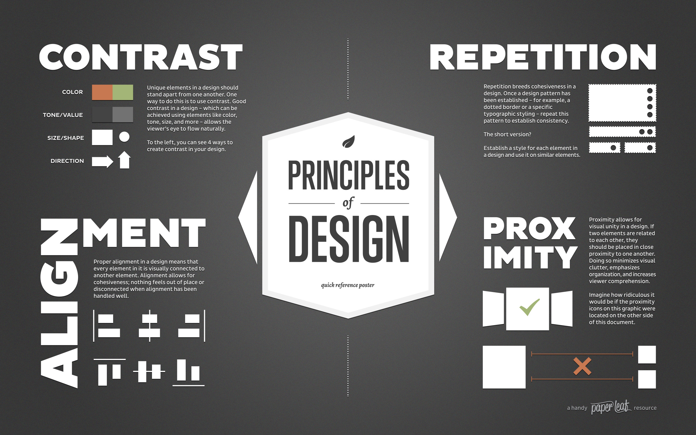

What Is Good Design?
It Is Innovative
The possibilities for progression are not, by any means, exhausted. Technological development is always offering new opportunities for original designs. But imaginative design always develops in tandem with improving technology, and can never be an end in itself.
It Makes a Product Useful
A product is bought to be used. It has to satisfy not only functional, but also psychological and aesthetic criteria. Good design emphasizes the usefulness of a product whilst disregarding anything that could detract from it.
It Is Aesthetic
The aesthetic quality of a product is integral to its usefulness because products are used every day and have an effect on people and their well-being. Only well-executed objects can be beautiful.
It Makes A Product Understandable
It clarifies the product’s structure. Better still, it can make the product clearly express its function by making use of the user’s intuition. At best, it is self-explanatory.
It Is Unobtrusive
Products fulfilling a purpose are like tools. They are neither decorative objects nor works of art. Their design should therefore be both neutral and restrained, to leave room for the user’s self-expression.
It Is Honest
It does not make a product appear more innovative, powerful or valuable than it really is. It does not attempt to manipulate the consumer with promises that cannot be kept.
It Is Long Lasting
It avoids being fashionable and therefore never appears antiquated. Unlike fashionable design, it lasts many years — even in today’s throwaway society.
It Is Thorough Down To The Last Detail
Nothing must be arbitrary or left to chance. Care and accuracy in the design process show respect towards the consumer.
It Is Environmentally Friendly
Design makes an important contribution to the preservation of the environment. It conserves resources and minimizes physical and visual pollution throughout the lifecycle of the product.
It Is As Little Design As Possible
Less, but better — because it concentrates on the essential aspects, and the products are not burdened with non-essentials. Back to purity, back to simplicity.